Harjoitus 3: Paikkatietoaineiston visualisointi ja nimiöinti
Harjoituksen sisältö
Harjoituksessa tutustutaan eri rasteri- ja vektoriaineistoihin ja niiden perusvisualisointitekniikoihin sekä vektoriaineistojen nimiöintitoimintoihin.
Harjoituksen tavoite
Harjoituksen jälkeen opiskelija tuntee eri paikkatietoaineistojen visualisoinnin perustyökalut ja osaa lisätä vektoriaineistoon haluamansa nimiöt.
Arvioitu kesto
60 minuuttia.
Valmistautuminen
Avaa uusi QGIS-projekti (Projekti > Uusi) ja tallenna se nimellä “QGIS-harjoitus 5”. Lisää projektiin seuraavat aineistot:
..kurssihakemisto/5. Harjoitus/L4133B.asc
..kurssihakemisto/5. Harjoitus/TieViiva.shp
..kurssihakemisto/5. Harjoitus/ne_10m_populated_places_suomi.shp
..kurssihakemisto/5. Harjoitus/Naturakohde_ma.shp
Tasojen visualisoinnin valikko
Tasojen visualisointia ja nimiöintiä määritetään QGISin kuvaustekniikkavalikossa. Tämän valikon käyttöön on kaksi vaihtoehtoa:
- Avaamalla Tason ominaisuudet- valikko:
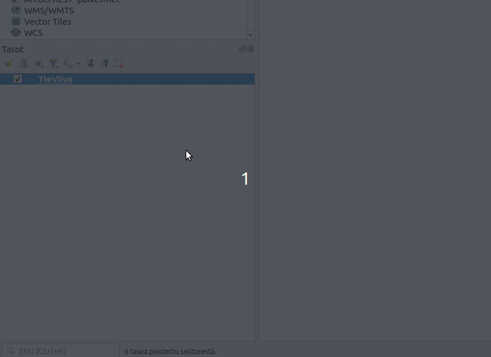
Avaamalla Tyylipaneeli:
2.1 Klikkaa Tasot- paneelista “Avaa tason tyylit- paneeli”
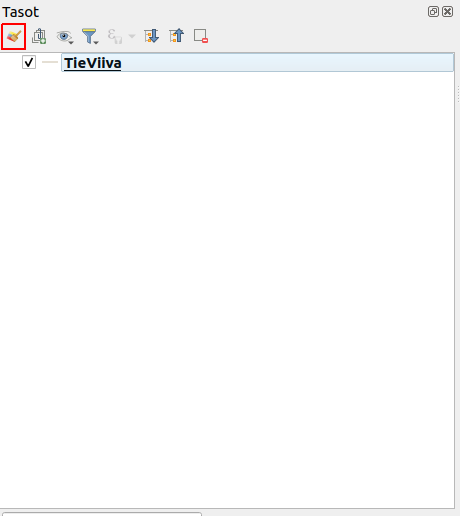
2.2 Tämän pitäisi avata tyylipaneeli, yleensä QGIS- ikkunan oikeaan reunaan:
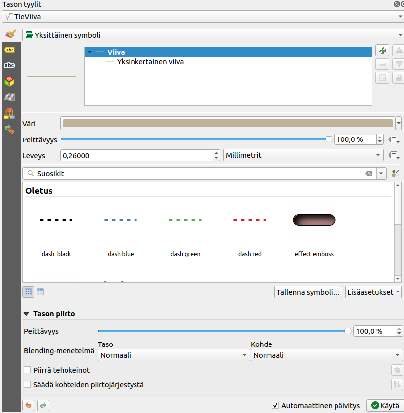
Molemmilla tavoilla saat saman valikon auki. Tyylipaneelissa on oletusvaihtoehtona “Automaattinen päivitys”, joka tarkoittaa että kuvaustekniikkaan tehdyt muutokset näkyvät välittömästi kartalle. Kun valikon avaa Tason ominaisuudet- valikon kautta, tulee tyyli erikseen päivittää Käytä painikkeesta, sekä hyväksyäksesi muutokset tulee lopuksi klikata OK- painiketta.
Kokeile avata valikko molemmilla keinoilla. Seuraavissa harjoituksissa voit käyttää menetelmää, joka tuntuu paremmalta.
Rasteriaineiston visualisointi
Aseta nyt L4133B-rasteriaineisto näkyväksi ja piilota muut aineistot. L4133B.asc on Maanmittauslaitoksen avoin korkeusmalliaineisto, joka sisältää osan Helsingistä. Jos aineisto avautuu tuntemattomassa koordinaattijärjestelmässä (= virheellisessä projektiossa), aseta tasolle koordinaattijärjestelmäksi ETRS89/TM35FIN (EPSG:3067). Muista tarkistaa myös projektin koordinaattijärjestelmä. Oletuksena korkeusmalli näyttää tällaiselta:

Huomaa, että QGIS on tunnistanut, että aineisto sisältää jatkuvia arvoja ja on visualisoinut ne yksittäisenä harmaana kanavana. Oletusvärityksellä onnistut erottamaan Pasilan ratapihan oikeassa yläkulmassa.

Avaa tason Kuvaustekniikka-asetukset. Muista, että rasteriaineistojen kuvaustekniikkatyökalut ovat erilaiset kuin vektoriaineistoilla. Voit vaihtaa harmaasävyesityksen pseudoväreiksi. Voit kokeilla myös rinnevarjostetta.

Vektoriaineistojen visualisointi
Siirrytään nyt visualisoimaan vektoriaineistoja. Tarkastele kaikkia QGIS-projektiin avaamiasi vektoriaineistoja. Voit huomata, että jokaisen tason vasemmalla puolella on muoto, joka kuvastaa kyseisen tason vektorityyppiä. TieViiva on viiva-aineisto, ne_10m_populated_places_suomi on pisteaineisto ja NaturaKohde_ma on polygoniaineisto.

Viiva-aineiston visualisointi
Aseta TieViiva-aineisto näkyviin ja piilota muut aineistot. Avaa TieViiva-aineiston kuvaustekniikkavalikko. Voit huomata, että vektoritason tyyliominaisuudet ovat erilaiset kuin rasteritason.
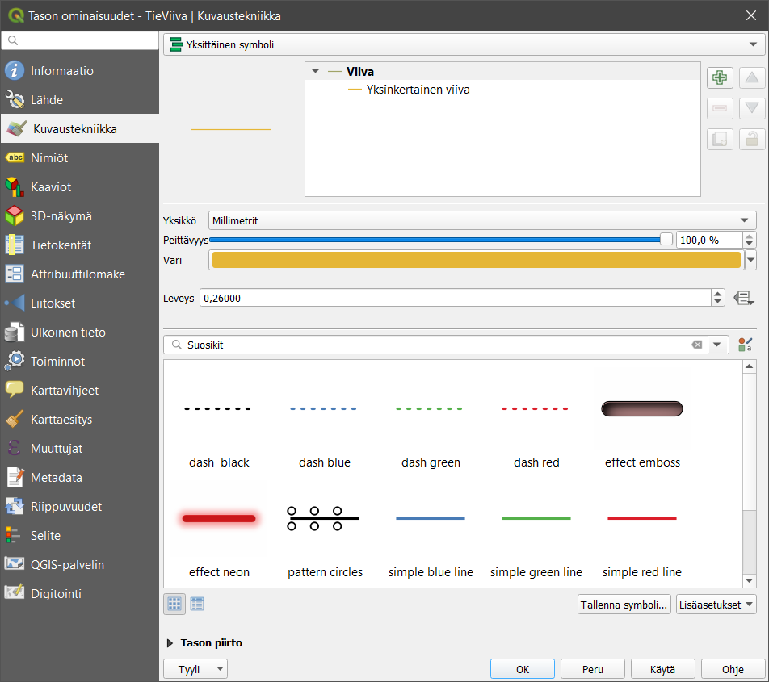
Vaihda TieViiva-aineiston Väri ja Leveys haluamaksesi. Avaa vielä jokin symbolikirjasto, esimerkiksi Suosikit, ja muuta viivan tyyliksi jokin sinua miellyttävä tyyli. Paina lopuksi OK, jolloin ikkuna sulkeutuu ja TieViiva-taso näkyy nyt määrittämälläsi kuvaustekniikalla.
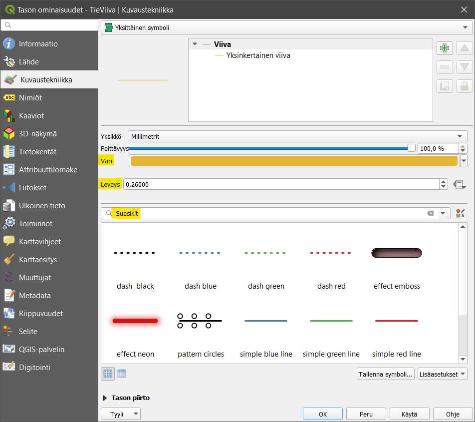
Eri vektoriaineistotyypeillä (piste, viiva, polygoni) on erilaiset kuvaustekniikan työkalut, vaikkakin ne muistuttavat paljon toisiaan. Esimerkiksi pistetasolle ei voida tehdä samoja tyylittelyjä kuin viiva- tai polygonitasolle.
Pisteaineiston visualisointi
Visualisoidaan seuraavaksi piste-aineistoa. Aseta ne_10m_populated_places_suomi-aineisto näkyviin yhdessä TieViiva-aineiston kanssa ja piilota muut aineistot. Tämä aineisto sisältää Natural Earth -kaupunkiaineiston Suomesta. Avaa tason Kuvaustekniikka- valikko. Huomaa erot viiva- ja pisteaineiston ominaisuuksissa. Vaihda aineiston Väri ja Koko. Vaihda myös symbolia ja kokeile, miten kierto vaikuttaa symbolin näkymiseen.

Pisteaineistosi voi näyttää yhdessä viiva-aineiston kanssa esimerkiksi tältä:
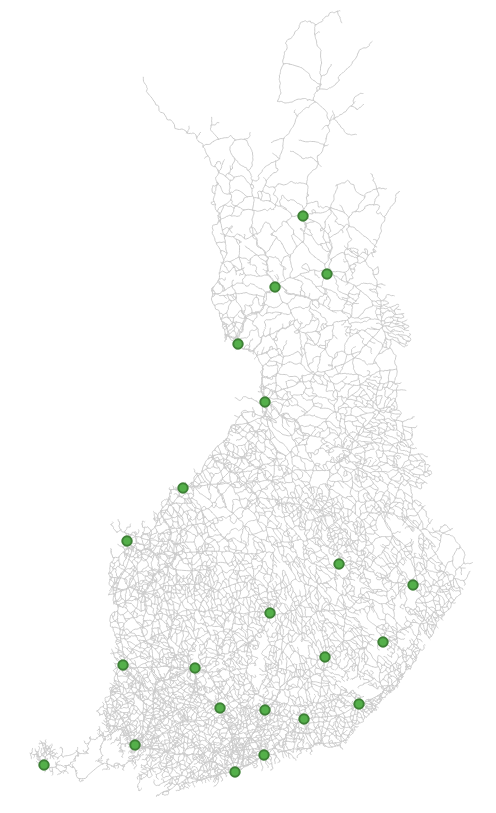
Polygoniaineiston visualisointi
Visualisoidaan vielä polygoniaineisto. Aseta NaturaKohde_ma-aineisto näkyviin yhdessä TieViiva-aineiston ja ne_10m_populated_places_suomi-aineiston kanssa ja piilota muut aineistot. Avaa NaturaKohde_ma-aineiston Kuvaustekniikka-valikko ja huomaa erot verrattuna viiva- ja pisteaineistojen kuvaustekniikkaan. Vaihda tason Väri ja valitse tasolle eri symboli. Voit myös kokeilla erilaisia Peittävyys-arvoja.

Saattaa olla, että aineistotasot peittävät toisensa vaikka siten, että polygoniaineisto peittää muut sen alle jäävät aineistot. Voit muuttaa tasojen järjestystä ja siten tasojen näkymistä raahaamalla/vetämällä tasot uuteen järjestykseen Tasot-paneelissa. Usein polygoniaineistot on hyvä jättää alimmiksi tasoiksi. Jos kartalla halutaan visualisoida jotakin rasterikuvaa, kannattaa se/ne yleensä pitää myös alimpina tasoina. Uudelleen järjestettynä karttasi tulisi näyttää tältä:
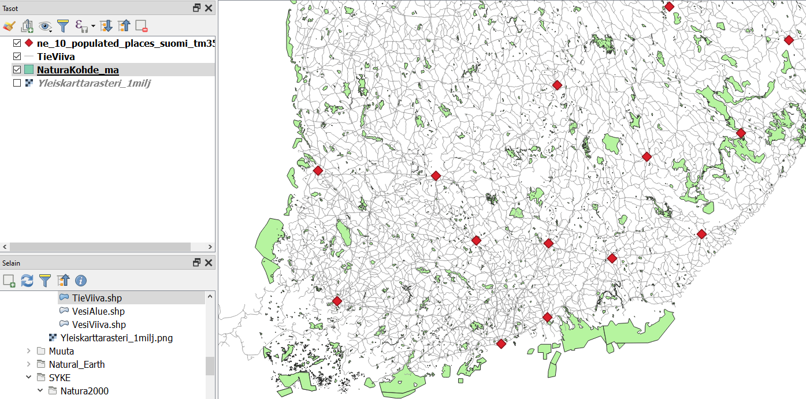
Symbolien muokkaaminen
Seuraavaksi muutamme polygonien symboleja. Avaa uudelleen Naturakohde_ma-tason Kuvaustekniikka-valikosta ensin Yksinkertainen täyttö (Simple fill) -rivi oheisen kuvan mukaisesti:
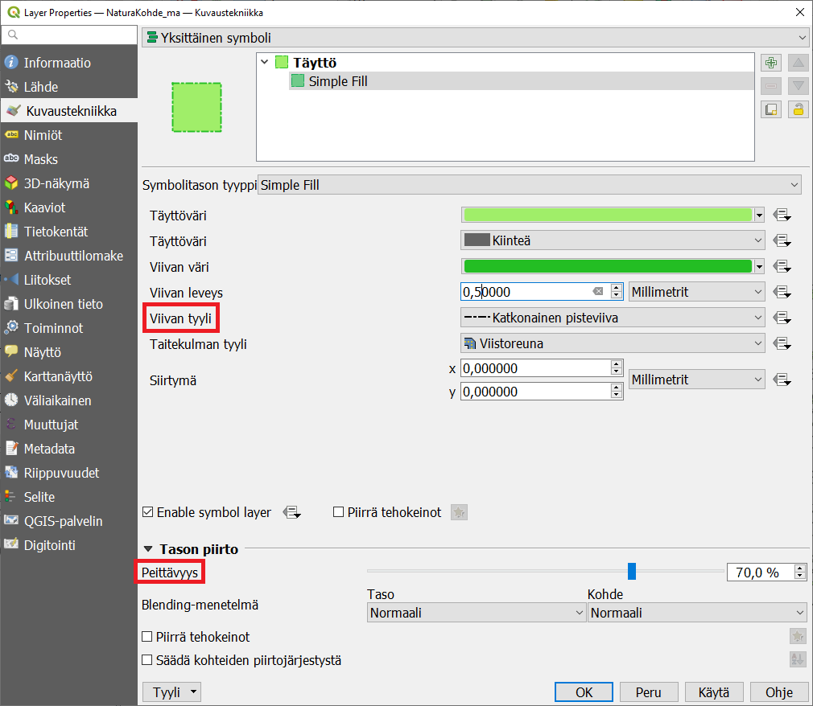
Valitse sen jälkeen Viivan tyyli -asetukseksi Katkonainen pisteviiva. Voit määritellä viivan leveyden haluamaksesi. Lopuksi voit vielä muuttaa Peittävyys-asetukseksi 70 % (Tason piirto -asetuksista).
Mittakaavan käyttö symboleissa
Seuraavaksi määrittelemme mittakaavarajat Tieviiva-tasolle. Valitse tason Ominaisuudet > Karttanäyttö ja rastita Scale Dependent Visibility (mittakaavaperusteinen näkyvyys). Muuta sitten Pienimmäksi mittakaavaksi 1:3 000 000. Tämä tarkoittaa sitä, että kun kartan mittakaava on pienempi kuin 1:3 000 000, niin karttatasoa ei piirretä.
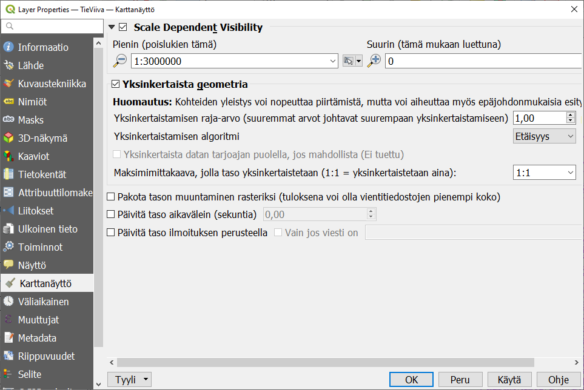
Kokeile nyt karttaikkunassa tason näkymistä eri mittakaavoilla. Mittakaavaa saat muutettua lähentämällä tai loitontamalla karttaa (esim. hiiren rullalla). Voit myös syöttää mittakaavan lukuna QGISin alaosassa sijaitsevassa Tilapalkissa.
Symbolitasojen muokkaaminen
Seuraavaksi muokkaamme visualisointityyliämme hieman pidemmälle. Symbologiat voivat QGISissä koostua yhdestä tai useammasta symbolitasosta (kuvassa Täyttö-kohdan alla). Esimerkiksi monikulmioiden symbolitasojen hyödyntäminen voi tuottaa hyvinkin hienovaraisen visualisoinnin. Symbolitasojen avulla voidaan määrittää monikulmion täyttämisen värit ja tyylit (esim. pistetäyttö).
Lisää uusi symbolitaso NaturaKohde_ma-tasolle. Avaa tason Kuvaustekniikka-asetukset (Tason ominaisuudet -ikkunasta) ja lisää uusi symbolitaso painamalla plussa-kuvaketta.
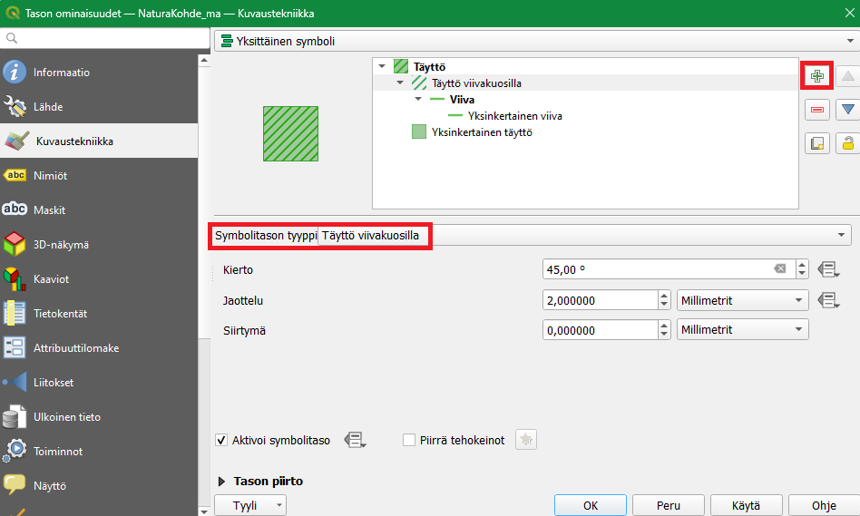
Muuta lisätyn symbolitason tyypiksi Täyttö viivakuosilla ja määrittele viivakuvioinnin kulma ja etäisyys haluamallasi tavalla. Voit myös määritellä viivakuvioinnissa käytetyn viivan leveyden ja värin valitsemalla Viiva-symbolitason tyylitasoluettelosta. Tarkista lopputulos.

Nimiöinti
Avaa NaturaKohde_ma-tason kuvaustekniikka- valikko ja valitse Nimiöt-välilehti. Valitse Yksittäinen nimiö ja Nimiöiden perustana -alasvetovalikosta nimiöinnissä käytettävän sarakkeen nimi. Nimiöt nähdään nyt karttaikkunasta, johon ne ovat päivittyneet.

Nimiöiden tyyli- ja yleisasetukset
Nimiöiden tekstien näkymistä kartalla voi määrittää monella eri tavalla. Alla kuvaukset QGISin nimiöiden muokkaamisen alateemoista:
| Teksti | Määritellään tekstin tyyli, väri ja muita yleisiä ominaisuuksia. |
| Muotoilu | Voit muodostaa useampirivisiä tekstejä, keskittää tekstiä ja määritellä lukujen muotoa. |
| Vyöhyke | Luodaan tekstiä korostavat puskurit (tekstin reunukset). |
| Maski | Asetetaan maski tekstin ympärille valituilla tasoilla (katso myös Maski-välilehti) |
| Tausta | Tekstin taustalle voi piirtää suorakulmion tai muun muodon. |
| Varjo | Teksteille voidaan muodostaa varjo. |
| Osoitinviiva | Piirretään viivaa kohteesta tekstille. |
| Sijoittaminen | Määrittelee tekstien sijoittumista kohteiden suhteen. |
| Karttanäyttö | Määrittelee tekstien mittakaavarajoja ja muita tekstien näkyvyyteen liittyviä asioita. |
Nimiön tekstityyli
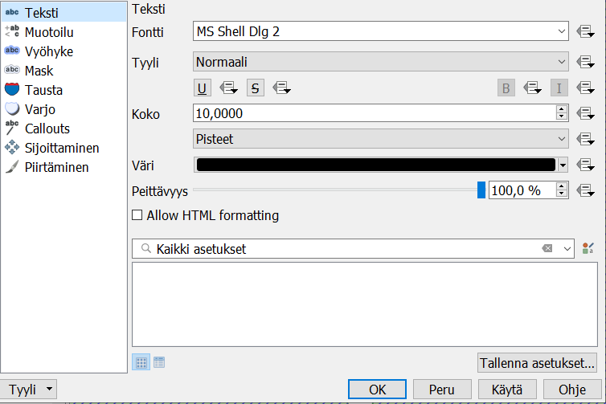
Nimiöiden tekstien tyyleille voit asettaa esimerkiksi haluamasi fontin, tyylin ja koon. Kokeile erilaisia tekstityylejä. Kokeile nimiöiden varjostamista, minkä avulla voimme korostaa nimiöitä taustalla olevista muista karttaelementeistä. Valitse Varjo-alateema ja rastita sitten Piirrä heittovarjo. Paina Käytä, jotta näkisit tulokset kartalla. Kokeile vaihtaa asetuksia kuten siirtymä, sumennussäde, peittävyys sekä väri, ja katso miten ne vaikuttavat nimiöinnin varjoon. Huomaat muutokset kartalta tai Esimerkki tekstistä -kentästä.
Toinen työkalu tekstin korostamiseen on tekstiä ympyröivä vyöhyke. Valitse Vyöhyke-alateema ja lisää tekstille haluamasi puskuri rastimalla Piirrä tekstivyöhyke. Näin saat nimiöt erottumaan kartasta vielä paremmin. Kokeile erilaisia vyöhykkeen kokoja, värejä ja läpinäkyvyyttä.
Avaa vielä Sijoittaminen-alateema ja valitse Using perimeter (käyttäen kehää). Valitse Sallitut asemoinnit -kohdassa Viivan alla. Huomaa, että Sallitut asemoinnit -kohdassa tulee aina olla vähintään yksi kohta valittuna. Jos useampi kohta on valittu, QGIS valitsee automaattisesti parhaan vaihtoehdon jokaiselle kohteelle. Paina OK, ja huomaa, että nyt nimiöt seuraavat monikulmioiden rajoja.

Tulos voi näyttää oudolta, etenkin jos karttaikkunan mittakaavaa on asetettu ison alueen kattavaksi. Lähennä karttaa, jotta nimiöt näkyisivät johdonmukaisemmin ja pohdi, missä tapauksessa tämänkaltainen nimiöinti olisi sopivinta. Etsi vielä Sijoittaminen > Prioriteetti ja määritä se Korkeaksi. Tällä tavalla annat preferenssin muokkaamasi tason nimiöille suhteessa muiden tasojen nimiöihin ja voit näin järjestää tärkeimpien ja ei niin tärkeiden tasojen nimiöintiä. Paina vielä OK.
Psst! Yksi hyödyllinen tapa rajata nimiöitä on Karttanäyttö > Kohteen valinnat ja asettaa kohtaan Häivytä nimiöinti kohteilta, jotka ovat pienempiä kuin-kohtaan jokin arvo. Näin QGIS näyttää vain isoimpien kohteiden nimiöinnit.
Nimiöinnit viivatasoilla
Samalla tavalla kuin juuri määritimme nimiöinnin monikulmiotasolle, voidaan niitä määrittää muillekin vektoriaineistoille. Avaa TieViiva-tason kuvaustekniikka- valikko ja aktivoi nimiöiden käyttö päälle edellisessä harjoituksessa oppimallasi tavalla. Valitse Nimiöiden perustan -kohdan alavalikosta käytettäväksi nimiöintisarakkeeksi Tienumero. Paina Käytä, ja katso muutokset. Avaa vielä nimiöiden Sijoittaminen-alateema ja rastita Seuraa viivaa -toiminto päälle. Paina Käytä, ja tarkista, että nimiöinti toimii odotetulla tavalla. Katso esimerkkiasetukset kuvasta:

Nyt nimiöt seuraavat viivoja paremmin. Huomaa myös, että kaikki nimiöt eivät nyt tule piirretyksi. Vaihda Maksimikulma kaarevien merkkien välillä -kohdan arvoja, niin pystyt muokkaamaan tekstin kaarevuuden reunaehtoja. Voit sulkea Tason ominaisuudet-ikkunan totuttuun tapaan painamalla OK.
Nimiöiden piirtäminen
Zoomaa karttanäkymä näyttämään koko aineisto klikkaamalla Zoomaa täydeksi -painiketta  . Odota hetki, että nimiöt piirtyvät. Nimiöitä on nyt liikaa karttaikkunassa, mikä vaikeuttaa kartan hahmottamista. Olisi hyödyllistä määrittää nimiöt eri mittakaavoille erikseen. Avaa taas NaturaKohde_ma-tason ominaisuudet ja valitse Nimiöt sivupalkista ja Karttanäyttö-alateema. Rastita Näytä kaikki tämän tason nimiöt (myös päällekkäiset nimiöt) ja paina Käytä. Nimiöiden piirtämiseen menee hetki, koska kaikki kartalla näkyvät monikulmiot nimetään. Kun kartta on piirtynyt huomaat, ettei kannata nimiöidä kaikkia monikulmioita kyseisellä mittakaavalla. Rastita tämä asetus pois päältä ja paina Käytä. Huomaa, että oletuksena QGIS jättää piirtämättä toisiinsa törmäävät nimiöt.
. Odota hetki, että nimiöt piirtyvät. Nimiöitä on nyt liikaa karttaikkunassa, mikä vaikeuttaa kartan hahmottamista. Olisi hyödyllistä määrittää nimiöt eri mittakaavoille erikseen. Avaa taas NaturaKohde_ma-tason ominaisuudet ja valitse Nimiöt sivupalkista ja Karttanäyttö-alateema. Rastita Näytä kaikki tämän tason nimiöt (myös päällekkäiset nimiöt) ja paina Käytä. Nimiöiden piirtämiseen menee hetki, koska kaikki kartalla näkyvät monikulmiot nimetään. Kun kartta on piirtynyt huomaat, ettei kannata nimiöidä kaikkia monikulmioita kyseisellä mittakaavalla. Rastita tämä asetus pois päältä ja paina Käytä. Huomaa, että oletuksena QGIS jättää piirtämättä toisiinsa törmäävät nimiöt.
Rastita päälle Mittakaavaperusteinen näkyvyys ja laita Minimimittakaava-kentän arvoksi 500 000. Paina OK. Natura-kohteiden nimiöt eivät enää näy 1:500 000 mittakaavan ulkopuolella. Lähennä karttaan, kunnes nimiöt näkyvät uudelleen. Muuta samalla tavalla TieViiva-tason piirtäminen siten, että sen nimiöt näkyvät vasta kun mittakaava on pienempi kuin 1:200 000.

Edistyneet ominaisuudet
Voit myös testata tekstien edistyneitä ominaisuuksia NaturaKohde_ma -tasolla. Voit ohjata nimiöiden tekstejä lausekepohjaisesti QGISin Lausekkeen muokkaus -työkalulla. Saat lausekkeen muodostajan auki Nimiöiden perustana -alasvetolaatikon vieressä olevasta painikkeesta:

Tehdään nyt nimiö, joka yhdistää tietoa useammasta kentästä. Klikkaa kuvassa näkyvästä Lausekkeen muodostaja -painikkeesta. Lausekkeen muokkaus -työkalu aukeaa.
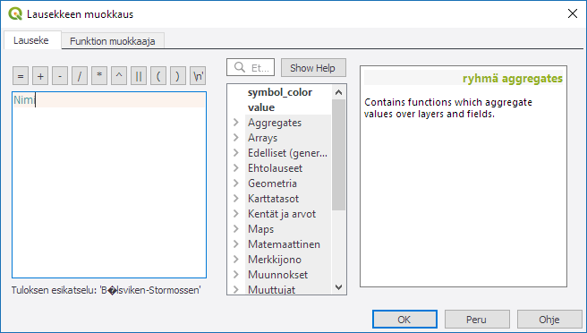
Lausekkeen muokkaus on tehokas työkalu, jota voidaan käyttää nimiöiden muokkaamisen lisäksi myös muihin tarkoituksiin. Lauseke-kentässä on tällä hetkellä nimi, sillä valitsimme Nimi-kentän aikaisemmin Nimiöiden perustana -alasvetovalikosta. Aineistossa on myös kenttä NaturaTunn, joka sisältää alueen tunnuksen. Tehdään lauseke, joka yhdistää alueen nimen ja tunnuksen.
Kirjoita Lauseke-kenttään seuraava lauseke:
NaturaTunn || '\n' || Nimi
Lausekkeessa esiintyy kentän nimien NaturaTunn ja Nimi lisäksi myös rivinvaihtosymboli ’’ ja kaksi || -merkkiä, jotka yhdistävät merkkijonot yhdeksi tekstiksi.
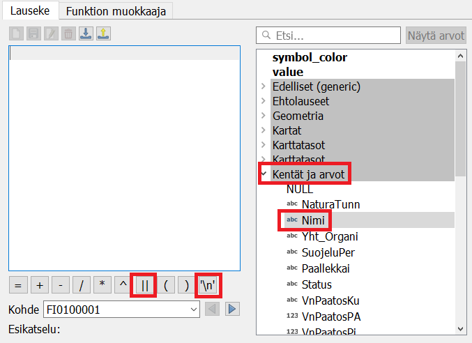
Psst! Voit lisätä rivinvaihtosymbolin lausekkeeseen painamalla Lauseke-ikkunan päällä olevaa painiketta. Samalla tavalla voit lisätä aineistossa olevia kenttiä lausekkeeseen laajentamalla kentät ja arvot -valikon ja kaksoisklikkaamalla kentän nimeä.
Kirjoita edellä mainittu lauseke ja paina OK. Klikkaa Tason ominaisuudet -valikossa Käytä ja katso kartalta, miltä alueiden nimiöinti näyttää.
Kun olet valmis, tallenna projektitiedosto kurssihakemistoon pikanäppäimellä CTRL + T (tai CTRL + S) tai päävalikosta Projekti > Tallenna.
Psst! Koulutuksen jälkeen saat henkilökohtaista tukea Gispon tukipalvelusta. Lähetä kysymyksesi tai kommenttisi osoitteeseen koulutustuki@gispo.fi!